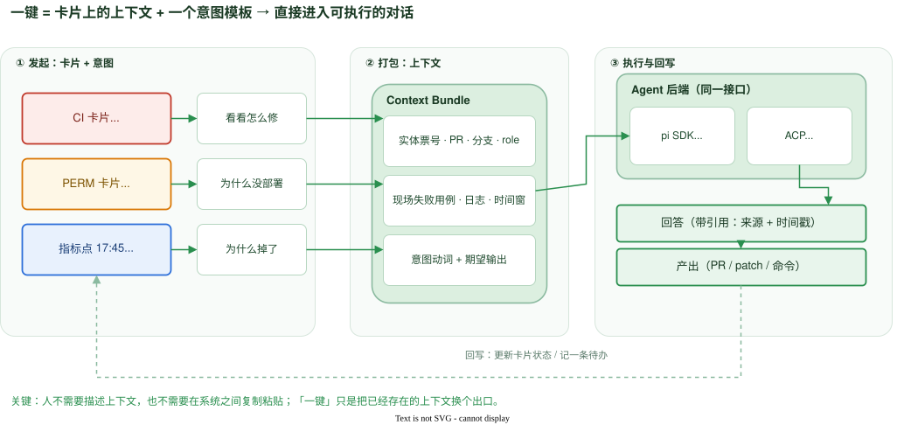
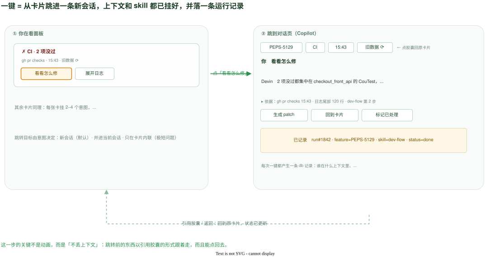
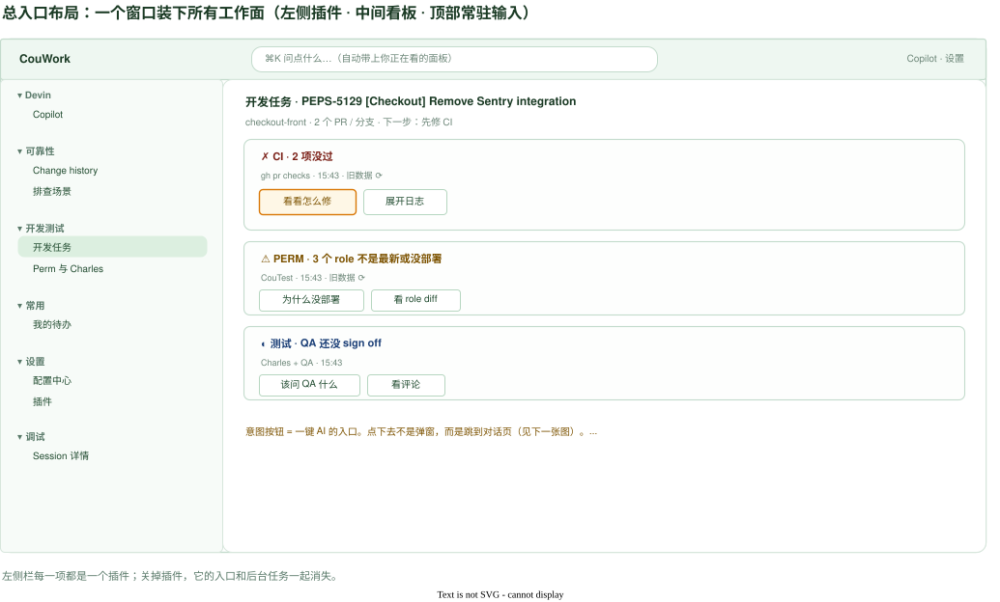
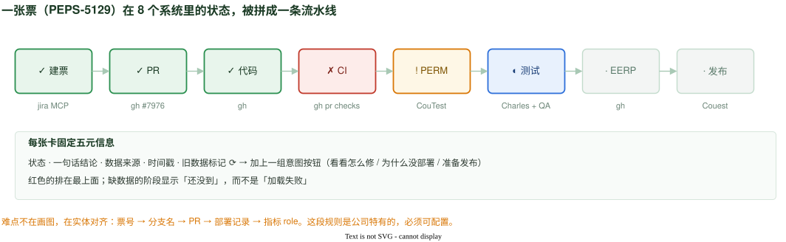
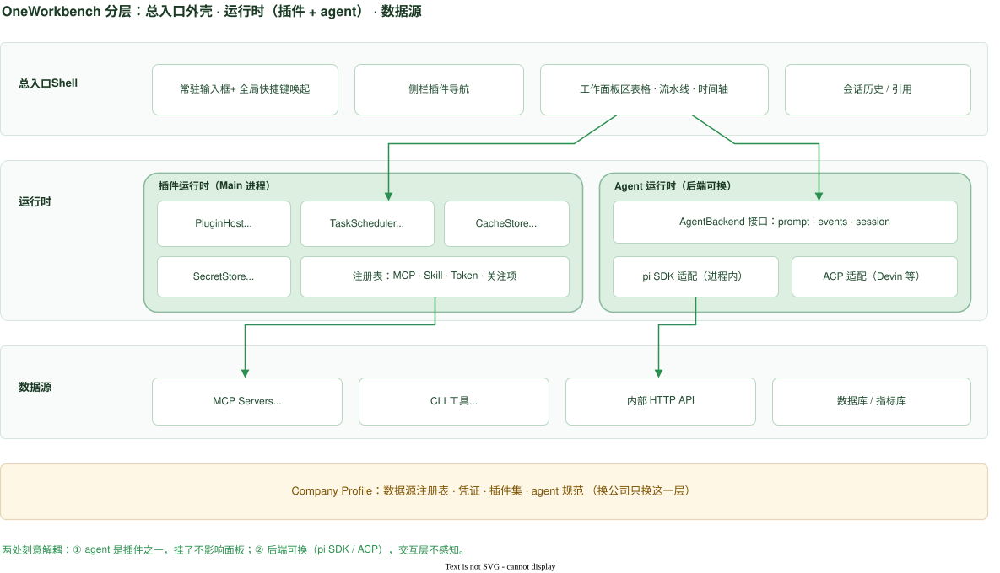

OneWorkbench：桌面总入口 + 一键 AI
1-click AI
desktop shell
agent backend
目录
核心：一键 AI
日常最贵的一步不是「想出怎么做」，而是把上下文凑齐：翻票号、翻 CI 日志、翻部署记录、翻监控曲线，然后才轮到问 AI。一键 AI 就是把这一步删掉。
原型（CouWork）里每张卡片上都有一组按钮：看看怎么修、为什么没部署、准备发布。点下去，人不需要贴任何东西——票号、失败的用例、最近的部署、时间窗内的变更，全都被打包好一起进对话。

上下文包的三层
| 层 | 放什么 | 谁提供 |
|---|---|---|
| 实体 Identity | 票号、PR、分支、环境、role、时间点 | 当前视图的实体（不需要额外请求） |
| 现场 Evidence | 失败用例 + 报错片段、最近部署、时间窗内变更、日志尾部、指标序列 | 数据源；插件已经缓存过，几乎零成本 |
| 意图 Intent | 动词 + 期望输出形态（解释 / 定位 / 生成 patch / 给检查单） | 意图模板，写在插件里，可版本化 |
四条规则
- 一键不是零输入：允许在意图上补一句，但不补也必须能跑出结果。
- 上下文由系统打包：用户永远不需要复制粘贴日志、URL、版本号。
- 结果必须有出口：回答 / patch / 状态变更 / 新建待办，至少一个。否则它就只是个「解释器」，不解决问题。
- 意图模板是资产：写进插件、可迭代、可对比效果。散落在代码里的 prompt 字符串一定会腐烂。
交互设计：一键 = 跳进对话
定案很干脆：卡片上的意图按钮，点了就跳到对话页。不是弹窗、不是抽屉、不是侧栏叠加——就是换一个页面，因为对话才是活儿真正发生的地方。

一次点击发生了什么
- 捕获视图快照：当前卡片 + 视图 id + 时间点。
- 组装 ContextBundle（实体 / 现场 / 新鲜度）。
- 选目标会话：新会话（默认）或并入当前会话。
- 首条消息 = 意图模板 + bundle，且可编辑（想补一句就补，不补直接发）。
- 落一条 run 记录（下一节）。
为什么是跳转，不是就地弹窗
| 理由 | 说明 |
|---|---|
| 对话是主场景 | 点完之后往往连着一串动作（看日志 → 改代码 → 跑测试），需要完整工作区 |
| 历史可回看 | 跳转产生的是真会话，能在左侧历史里找回；弹窗式问答第二天就没了 |
| 实现更简单 | 不用维护「面板 + 叠加层」两套布局和两套快捷键 |
跳转必须解决三个问题
| 问题 | 做法 |
|---|---|
| 不丢上下文 | 对话顶部一排引用胶囊：PEPS-5129 CI 15:43 旧数据 ⟳，点任一回到原卡片 |
| 不串上下文 | 默认新建会话；只有同票同视图时才允许「并进当前会话」 |
| 不打断工作流 | 回来时保留滚动位置与筛选；卡片状态若已变（标记已处理）则刷新 |
五个容易做错的细节
| 细节 | 做法 | 不这么做会怎样 |
|---|---|---|
| 新鲜度要进 prompt | 卡片写着「15:43 · 旧数据」，这个事实一起传过去 | 模型拿旧数据下结论，人被误导 |
| 要求交代依据 | 回答里带「我看了哪些源、哪些没拉到」 | 无法判断可信度，等于又回到人肉核对 |
| 意图要带输出形态 | 「给可执行的修复步骤」≠「解释一下原因」 | 永远得到一段泛泛的分析 |
| 不要只做一个按钮 | 一张卡挂 2–4 个意图，而不是一个「问 AI」 | 用户还得自己想怎么问，等于没省事 |
| 结果要能回写 | 至少「标记已处理 / 记一条待办」 | 对话结束，工作里的状态没变 |
三种粒度
- 单卡意图：这张卡怎么了、怎么修。最高频。
- 行级意图：这批票里哪些今天必须动。
- 全局意图：
Cmd+K唤起，基于「我现在正在看的面板」提问。
执行链：意图 → skill → 记录
一键 AI 如果不留痕，就只是一次性问答。真正的做法是：每个意图绑一个 skill，跑一次就落一条记录。
我的做法是在意图上挂 dev-flow skill：一键之后不是让模型自由发挥，而是按 skill 规定的流程走（定位 → 复现 → 修复 → 验证），并且全程和「功能」挂钩，产生 db 记录。
卡片意图 fix-ci
└─ skill: dev-flow v3 ← 规定步骤与检查项，可版本化
├─ step 1 定位 gh pr checks + 日志尾部
├─ step 2 复现 本分支 diff vs mock
├─ step 3 修复 生成 patch
└─ step 4 验证 跑 CouTest
└─ run 记录（db） ← 每次一键一条
run_id · feature_id · intent · skill+version
session_id · context_hash · steps[] · output · status · cost · ts
记录不是一个日志文件，而是把「一键」变成可积累的资产：
| 能力 | 具体表现 |
|---|---|
| 可追溯 | 三个月后能查：这张票的一键都问过什么、结论是什么、谁确认的 |
| 可统计 | 哪个意图最常用、哪类问题修不好、dev-flow 常卡在第几步 |
| 可复用 | 同一 feature 的第二次一键，自动带上上次的记录，省掉重复排查 |
UI：桌面总入口
外壳的形态直接对标 DeepSeek Desktop 这类产品：常驻输入框 + 左侧会话/导航 + 中间工作面。差别在分工：面板负责「看」，对话负责「干」——两者是两个页面，靠一键互相跳转。

| 区域 | 作用 | 为什么必须有 |
|---|---|---|
| 顶部常驻输入框 | 随手问；自动带上当前面板的上下文 | 让人从「看」切到「问」是零成本的 |
| 左侧插件导航 + 会话历史 | 工作面切换；找回上次的对话 | 插件是功能边界，历史是记忆 |
| 中间面板 | 表格 / 流水线 / 时间轴 | 看比问高效，事实不该让模型复述 |
| 对话页（Copilot） | 一键的落点；引用胶囊可回跳 | 活儿在这里连着做，历史也在这里攒 |
插件：让一键有地方可挂
一键 AI 不是一个独立功能，它寄生在插件上：每个插件产出「卡片」，每张卡片带「意图」。所以插件要声明四件事：
export default definePlugin({
id: "dev-task",
title: "开发任务",
sidebar: { group: "开发测试", order: 10 }, // ① 侧栏入口
credentials: ["couest_token"], // ② 凭证
tasks: [ // ③ 后台任务
{ id: "refreshViewed", every: "5m", run: refresh },
],
cards: [ ... ], // ④ 卡片 → 意图
intents: [
{ id: "fix-ci", label: "看看怎么修", prompt: tpl("fix-ci"), skill: "dev-flow" },
{ id: "why-not-deploy", label: "为什么没部署", prompt: tpl("perm"), skill: "dev-flow" },
],
});
关键在 intents：动作与渲染是同一份数据——UI 拿来渲染按钮，agent 拿来当工具，而且每个意图顺带声明它挂哪个 skill（下一节讲记录）。
| 插件 | 侧栏 | 后台任务 | 动作 | 凭证 |
|---|---|---|---|---|
| Copilot | Devin | collectTasks（15 秒） | 18 | — |
| 我的待办 | 常用 | jiraDailyScan（1 分钟） | 5 | devin-oauth |
| 开发任务 | 开发测试 | importRegistrations（30 秒）、refreshViewed（5 分钟） | 4 | couest_token |
| Perm 与 Charles | 开发测试 | refreshPerms（1 分钟） | 5 | couest_token |
| Change history | 可靠性 | syncAbc / syncDeploys（1 小时） | 13 | devin-oauth |
| Session 详情 | 调试 | — | 4 | devin-sessions-db |
| 配置中心 | 设置 | — | 3 | — |
后台任务的三条约定（原型里写死的）
- App 开着才跑；上次没跑完就跳过这一次。
- 到点 App 没开，下次打开补跑一次。
- 插件关掉，它的后台任务一起停。
这三条等于承认「这是个人工作站，不是服务器」——反而让实现简单很多。
票：把 8 个系统拼成一条流水线

每张卡固定五元信息：状态 · 一句话结论 · 数据来源 · 时间戳 · 旧数据标记，再加一组意图按钮。红色的排在最上面。
| 难点 | 说明 |
|---|---|
| 实体对齐 | 票号 → 分支名（feature/PEPS-5129-…）→ PR → 部署记录 → 指标 role。规则公司特有，必须可配置，不能写死在视图里。 |
| 阶段缺失 | 没提 PR 就没有 gh 数据。要能表达「还没到」，而不是「加载失败」。 |
| 新鲜度不一致 | 8 个源频率不同，一张卡 15:38、另一张 16:43。必须显式标出来，否则用户会以为是一致快照。 |
技术选型：TS、Electron、SDK / ACP

为什么是 TypeScript
- 全栈同语言：manifest（插件声明）→ UI → 后台任务调度 → MCP 客户端 → agent SDK，一个语言、一套类型。插件的 manifest 类型可以直接被 UI 和调度器共享，改字段就报错。
- 生态对齐：React、Electron、MCP 的 TS SDK、pi 的 SDK、ACP 客户端都在 TS 里最成熟。
- 扩展成本低：写一个插件 = 写一个 TS 模块，不需要新语言、新构建。
- 边界：重计算 / 数据处理交给 Python CLI（通过进程调用），不需要为桌面壳引入第二种语言。
agent 后端：先定接口，再选实现
interface AgentBackend {
prompt(text: string, ctx: ContextBundle): Promise<void>;
abort(): Promise<void>;
on(event: "delta" | "tool" | "done" | "error", cb): Unsubscribe;
session?: SessionHandle; // 可读历史 / 分支时才提供
}
| 实现 | 怎么接 | 取舍 |
|---|---|---|
piSdkBackend 首选 |
直接 createAgentSession()，跑在 Electron 主进程或 utilityProcess（Node）里 |
进程内、类型直通、能直接读 session 与事件；不用自己写帧解析和请求对账。注意 SDK 模式不会自动加载内置扩展（MCP / codemode / tool_search 要显式注册），配置目录可用 agentDir 做隔离。 |
acpBackend |
走 ACP（Agent Client Protocol）连外部 agent，如 Devin | 能复用已有的外部 agent（我就是这么用 Devin 的）；能力取决于对方实现的 ACP 方法。 |
piRpcBackend |
启动 pi --mode rpc 子进程，走 JSONL |
进程隔离最彻底（agent 崩了不影响面板），但要自己处理分帧与请求对账。降级选项，不是首选。 |
其它
| 选择 | 理由 |
|---|---|
| Electron | 需要本机凭据、文件系统、常驻快捷键；主进程即 Node，可直接加载 agent SDK |
| MCP 优先 | 公司平台有 MCP 就接 MCP；没有就包一层 CLI 或薄 HTTP 客户端，统一成「参数 → 结果」 |
| 缓存 + 调度 | 每个数据源一份带时间戳的缓存；视图永不直接打外部接口 |
换一家公司
不动的：总入口外壳、插件运行时（Host / 调度 / 缓存 / 凭证）、agent 后端接口、一键 AI 的交互形态。
| 换什么 | 例子 |
|---|---|
| 数据源 | Jira → Linear；GitLab → GitHub；内部的测试 / 发布平台替换 |
| 插件集 | 没有 PERM / EERP 就不装那两个；多一个「值班表」就加一个 |
| 意图模板 | 同一张 CI 卡，不同公司关心的诊断路径不同 |
| 凭证 | 各自 OAuth / token，一处配置、多插件引用 |
| agent 规范 | 分支命名、发布流程、审批边界 |
判定标准：换公司需要改运行时的一行代码，说明抽象漏了。
落地与未决
| 步骤 | 做什么 | 验收 |
|---|---|---|
| 1 | 一个插件 + 一张卡片的意图按钮（先硬编码） | 连续 3 天不打开原系统 |
| 2 | 抽出 manifest，做第二个插件 | 不改第一个插件的代码 |
| 3 | 跳转对话 + 引用胶囊 + 出口按钮 + run 记录 | 点一次就能拿到可执行结论，且能回到原卡 |
| 4 | 配置中心（MCP / Token / 任务 / 关注项） | 新增数据源不用改代码 |
| 5 | 第二个公司 profile | 只写插件 + 填配置，核心零改动 |
仍然没想清楚的
| 问题 | 为什么难 |
|---|---|
| 新会话 vs 并入当前会话 | 判定规则要明确，否则两个票的现场会混在一起 |
| 意图模板的格式 | 纯 prompt 模板 / 结构化 steps / 两者混合，直接影响可维护性 |
| 回写的权限边界 | agent 能不能直接改票、开 PR、触发发布，还是一律要人点确认 |
| 后台任务归属 | App 内定时器简单但关了不跑；要不要外置 cron |
| 插件边界 | 一插件一页面 vs 一插件多页面（「Perm 与 Charles」像两件事被合并） |
图源文件：docs/use-llm/assets/one-workbench.drawio（可用 draw.io 打开编辑，导出覆盖 assets/page1–3.svg）。上游愿景见 用 LLM 重造工作方式。